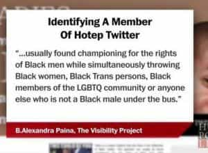

Michael is the author of Staying Married in a Degenerate Age. Follow him on Twitter or Facebook. You can read more of his writing at Honor and Daring.


Over the past several months on Twitter I started to notice tweets from black men that echoed many of the idea you will find in the manosphere. I quickly noticed that these men all identified themselves as “Hoteps.” Recently, one of these Hotep accounts announced an alliance with the Alt Right. But should the ROK community also welcome Hoteps as allies or is the group suspect?

“Hotep Jesus” Ali Shakur
The Hoteps are a movement of black men such as “Hotep Jesus” @VibeHi), “Uncle Hotep” (@handymayhem), and “ædonis | hotep” @lordaedonis) who are all associated with the website Hotep Nation. Hoteps are regarded as pariahs by the mainstream black community because of their “homophobic” and “misogynist” views. From the outside, the Hotep movement looks like a mildly black nationalist movement.
The Hoteps were also the focus of attack from the Alt Right for a long time because Hoteps have a penchant for ascribing the achievements of Ancient Egypt to sub-Saharan Africans. The most common Alt Right attack was tweeting the phrase, “WE WUZ KANGZ” along with a picture of the rocket-powered pyramids at the head of this article. That’s why it was shocking to me when Hotep Jesus, Ali Shakur, started to indicate that he did not harbor animosity toward whites, but that he felt that whites and blacks are both being used by globalists, specifically globalist Jews.
When you start doing there googles on people in power is always (((them))). Rarely whites or blacks.
— Hotep Jesus (@VibeHi) February 9, 2017
Later, when Shakur announced an alliance with the Alt Right, I decided to give the Hotep movement a deeper look.
Hoteps have a lot of beliefs that mirror those found on ROK. First, Hoteps oppose feminism because they can see the terrible effects feminism the black community, specifically black families. On the flip side, they also oppose the attention-whoring that so many women engage in on social media. The Hoteps I follow on Twitter don’t seem to mind a tasteful photo of an attractive black woman, but they would disapprove of a woman twerking or doing some other salacious thing on social media.
Hoteps believe in taking care of their children. Hoteps are critical of men and women in the black community who father bastards. This is controversial as about 70% of all black children born today are born out of wedlock. Hotep opposition is not based so much on morality as it is on observation. Hoteps know that children raised by single moms are at much greater risk than children who come from a healthy, two-parent home. In one Tweet, Hotep Jesus even speculated that the high rate of homosexuality in the black community may be tied to the fact that men need a strong, loving father. The Hotep opposition to feminism and their support of strong families puts Hoteps solidly in the camp that favors patriarchy.
Hoteps also aspire to become masters of personal finance. A capitalist economy rewards producers, not employees. Thus, Hoteps seek to become business owners. In addition to encouraging entrepreneurship, Hoteps also believe in becoming experts in investing. Hotep beliefs fly in direct contradiction to the handout programs that liberals advocate. Hoteps do not want welfare, and they do not blame their financial condition on white racism. They have no time for being victims. They believe that individual excellence can more than compensate for present day racism or past events, such as slavery.
Not surprisingly, if you ask a Hotep for investment advice, he will point you to black finance experts. Hoteps believe in supporting the black community. They don’t seek inclusion into white culture. Rather they prefer building a separate black culture. For example, Hotep Jesus tweeted out that he did not care whether or not some quota of black actors won an Oscar. This is just another example of how Hoteps want to foster independence.
I found agreement with these Hotep ideas, but there are also ideas that I found dubious. Hoteps seem to have a mystical, slightly new age spirituality that talks about manifesting things. While not ideal, these beliefs are no worse than the teachings of someone like Pastor Joel Osteen. They are also prone to conspiracy theories, but as we have seen in the past election cycle, some conspiracy theories are actually true.

There are a lot of good aspects to the Hotep movement but the movement is in danger of diluting its message in a quest for wider acceptance. One of the biggest features of Hotepism is that it seeks independence. That means that Hoteps seek to extricate themselves from government handouts and the entire social engineering edifice that has been erected by the Democrats.
Also, in their quest for independence the Hoteps want to move away from the racial animus that characterizes the Black Lives Matter movement that is basically asking whites to cease to exist. Instead, Hoteps want to leave behind the victim culture that has characterized the black community for the last 50 years. Yet, the Democrats push racial division as a cynical strategy to get black voters to vote for vile candidates such as Hillary Clinton. But despite the Democrat policy being completely incompatible with the ideals of the Hotep movement, a recent Hotep statement states:
Are Hoteps Democratic or Republican? Neither and both. Hoteps are not monolithic. You will have many who side with a particular party for various reasons and you will have many who side with neither.
Another point where the Hoteps may be broadening out too far is with regard to gays. While not a carte blanch endorsement of homosexuality, the Hotep movement now accepts gay members. But as the wider population found out in the 1990s, once you accept the open practice of homosexuality, the next step is normalization of those relationships, and that includes gay marriage.
The bottom line is that the leaders of the Hotep movement will have to avoid selling out. This is especially important because if the Hotep message gets adopted by the black community, it could spell the end of blacks acting as pawns for leftists to manipulate. There would be enormous pushback from the globalist/leftist camp who have used blacks as a tool to enact social engineering and extend their control over the entire population. Hotep leaders should expect to be offered financial rewards to moderate their message. If they refuse to sell out, those leaders will then be attacked in the press.
While we may not like it, the manosphere, the Alt Right, and the Alt Lite have all been identified as threats to the globalist order. I believe Hoteps will soon join the ranks of groups that are deemed enemies by the globalists. The Hotep message is obviously not for everyone, but I view them as allies in the wider war we are fighting to regain control of our countries—and in this war, we need every ally we can get. My only hope is that the Hotep leaders have the strength to resist the temptations and attacks that are certainly coming their way.
Read More: How Black America Was Created